Mapa Interativo da Rota
Clica em qualquer ponto ou rota para ver as fotografias reais, horários e direções no Google Maps.
Roteiro Dia-a-Dia
Todos os horários verificados, tempos de deslocação e fotografias reais de cada paragem.
Quem quiser cortar, corta pelo fim: sair do DANZÓN à 01:00 em vez das 02:30 não estraga nada do resto. Pelo princípio não dá, que a manhã é o voo.
Chegada ao Aeroporto VIE: Railjet + Metro U1
Comboio ÖBB Railjet (RJ/RJX) direto da estação por baixo do aeroporto até Wien Hauptbahnhof (15 min) ➔ Metro U1 direto até Schwedenplatz (7 min) ➔ 4 min a pé. Tudo no mesmo bilhete.
🕐 Parte aos :03 e aos :33 de cada hora. Com aterragem às 12:35, o realista é apanhar o das 13:33 e estar à porta de casa por volta das 14:20.
💶 ~€5,50/pessoa, 4 pax ≈ €22.
❌ CAT: está suspenso, substituído por autocarros, apesar do balcão e da sinalização próprios dentro do terminal.
❌ S7: só vai até St. Marx, fora do centro, e obriga a transbordo para elétrico. É o que os guias recomendam por ser o mais barato, e é o erro mais provável.
⚠️ Se o Railjet das 13:33 se atrasar, a decisão é só uma: esperar pelo próximo. Não saltar para o primeiro comboio que apareça. O Railjet seguinte parte aos :03 e aos :33, portanto nunca são mais de 30 minutos.
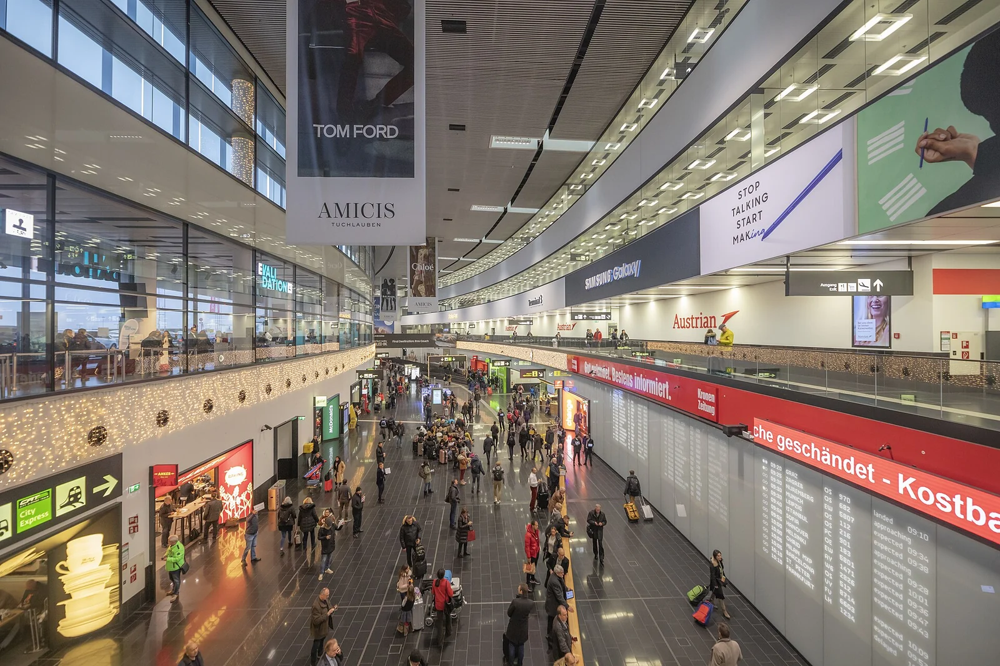
Central City Apartments (Judengasse 11)
Alojamento no coração histórico de Viena. Apenas 300 m a pé da estação Schwedenplatz e a escassos passos dos bares do Bermudadreieck.
🧳 Do aeroporto direto para aqui: o metro U1 deixa o grupo a 4 min da porta, sendo o único trajeto do dia com malas à mão.
🍽️ Almoço prático no Schachtelwirt (Judengasse 5, a 43 m da porta): comida austríaca tradicional servida em caixas (assado Schweinsbraten com Semmelknödel ou caixas ligeiras a ~€8–15/pessoa). Tem mesas no interior e abre às 11:30. Se estiver cheio: alternativa de rua rápida no Würstelstand am Hohen Markt (a 3 min, €5–7).
🔑 Check-in no apartamento: o anfitrião confirma a hora exata da entrega das chaves por volta das 14:00 (o habitual são as 15:00). Almoça-se e guardam-se as malas antes de arrancar para o passeio às 15:05.
🛒 Supermercado a 2–3 min a pé (BILLA Corso no Hoher Markt 12 ou SPAR Gourmet no Fleischmarkt 5): abastecer garrafas de água para as mochilas, cervejas para o frigorífico (Ottakringer, Stiegl) e artigos de pequeno-almoço antes da saída.
📱 Contacto: coordenar a receção com o anfitrião via WhatsApp antes de sair de Lisboa.
Catedral Stephansdom, Graben, Hofburg & Volksgarten
Uma linha reta para poente, sem voltar atrás e sem malas: casa ➔ Stephansdom (7 min) ➔ Graben e Kohlmarkt ➔ Hofburg (6 min) ➔ Volksgarten (7 min). São 1,6 km à ida em duas horas e quarenta, passo de passeio, que é o que se aguenta com 5 horas de sono. O regresso pelo Ring são outros 1,4 km (18 min) e passa à porta de casa. A Ópera e a Kärntner Straße ficam para a manhã do Dia 2: são o braço sul da zona pedonal a caminho do Hofburg.
- 15:05 Ruprechtskirche · a 100 m de casa. A igreja mais antiga de Viena, séc. XII sobre fundações do ano 740. Grátis, 10 min.
- 15:15 Ankeruhr · a 150 m, no Hoher Markt. Relógio mecânico Jugendstil de 1914, entre dois edifícios. Grátis, 5 min. O desfile das 12 figuras com música é ao meio-dia, portanto às 15:15 vê-se só uma.
- 15:30 Torre Sul do Stephansdom · 343 degraus e a vista 360° sobre os telhados, 60 min. €8,00/pax, e só em dinheiro. Ler a caixa abaixo antes de subir.
- 16:35 Peterskirche · a 30 m do Graben. Cúpula turquesa e frescos dourados, das igrejas barrocas mais espetaculares da Europa Central. Grátis. O recital de órgão diário das 15:00 só se apanha se o check-in tiver corrido cedo.
- 16:45 Graben, Kohlmarkt, Hofburg e Volksgarten · as ruas pedonais imperiais, o palácio dos Habsburgos e os jardins, até às 17:45.
⚠️ O Nordturm custa os mesmos €8,00 e sobe-se de elevador. O All Inclusive de €29, o único que se vende online, não compensa para quem só quer subir à torre.
Pôr do Sol no Canal do Danúbio (Donaukanal)
Graffiti, bares improvisados e gente sentada no betão a beber, a 300 m (3 min) do apartamento. O sol põe-se às 18:49, com luz azul até às ~19:25.
💶 Cerveja do supermercado, sentados no betão. Grátis e sem reserva, é o que os vienenses fazem a meio da semana.
☀️ É a margem virada a poente. Sentados aqui, o sol põe-se em frente, por cima da água e da silhueta da cidade velha. Na margem do 1.º distrito ficam de costas para ele.
🍺 É onde estão os bares e o movimento. A Obere Donaustraße é a rua desta margem, degraus largos até à água e a maior parte das pessoas sentadas.
🍽️ É o lado certo para o jantar. A Schöne Perle fica neste mesmo bairro: acabam o pôr do sol e sobem para o Karmeliterviertel sem voltar atrás.
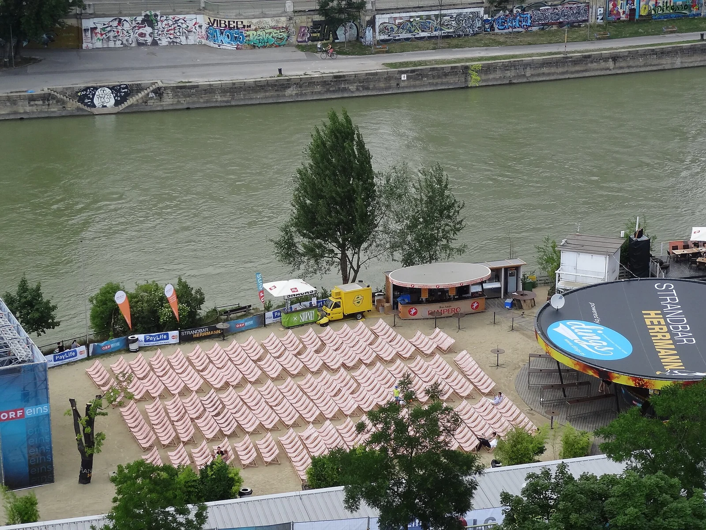
Jantar na Schöne Perle (Karmeliterviertel)
Große Pfarrgasse 2, 1020, 13 min a pé de casa e 8 min desde a ponta do canal na Salztorbrücke, do outro lado da Schwedenbrücke, no fim natural do passeio do canal. Cozinha vienense honesta, ambiente de bairro descontraído, com opções vegetarianas e veganas. É o bairro onde a cidade é real: ninguém repara que são turistas.
💶 Pratos €15,00–29,50; os veganos começam nos €14,90. Reservas só por telefone: +43 1 890 32 04.
🕐 Aberto todos os dias, sem dia de descanso: 11:00–24:00, cozinha até às 22:30. Jantando das 19:45 às 21:00 há 90 minutos de folga até a cozinha fechar. Levem dinheiro: nestes sítios de bairro o cartão estrangeiro falha.
• Gasthaus Pöschl (Weihburggasse 17, 11 min) se quiserem o melhor prato da noite, o Beisl moderno mais respeitado do 1.º distrito, minúsculo e cheio de vienenses. Pratos €14,80–29,50: peçam o Backhendl (€19,40) ou o Tafelspitz (€24,40). Reserva obrigatória, com dias de antecedência: +43 1 513 52 88. Fechado ao domingo.
• Zum Bettelstudent (Johannesgasse 12, 15 min) se chegarem atrasados do canal: barulhento, sem pretensão, entra-se e senta-se sem reserva. ⚠️ A casa dá dois horários diferentes no mesmo site e não publica preços: vale a pena confirmar antes de contar com ele. Fica a 3 min do DANZÓN.
• District Kebab (Marc-Aurel-Straße 7, 2 min): döner, dürüm e pide, seg–qui 11:00–23:00, 4,7★ em mais de 2200 avaliações.
• Würstelstand do Schwedenplatz (à saída do U-Bahn, 7 min): 09:00–06:00 todos os dias, salsicha com pão por €5–7, só dinheiro e sem uma única mesa.
• Billa a 86 m de casa (seg–sex até às 20:00, sáb até às 18:00): serve para provisões, mas fecha antes de vocês voltarem do canal.
Bermudadreieck & DANZÓN · "FIESTA" de quarta
21:15 → 22:30 · Bares no Bermudadreieck, à porta de casa, sem entrada e sem dress code:
• Krah Krah, ⚠️ fecha à meia-noite, serve para começar.
• Salzamt, esplanada na praça, até à 01:00.
• First Floor, cocktails, dom–qui até às 02:00.
22:30 → ~02:30 · DANZÓN Latin Club, Johannesgasse 3, 12 min a pé. Festa "FIESTA" fixa todas as quartas, 20:00–04:00: reggaeton, latin house e bachata, público 20–35 internacional, sem porta seletiva. ⚠️ O preço à porta não está publicado: confirmar no Instagram do clube.
⏰ Chegar às 22:30, a sala só enche depois dos workshops de dança, que acabam às 21:00.
• Cabaret Fledermaus (Spiegelgasse 2, 9 min): HOLIDAY CLUB toda a quarta, entrada livre, hits dos 90 e 2000. É a única outra pista a sério que se faz a pé e não paga nada, e o FALTER tem-na marcada para quarta, 23 de setembro. Se o DANZÓN estiver cheio, é para aqui.
• Kaktus (Seitenstettengasse 5, 2 min): entrada livre, aberto todos os dias desde as 19:00, pista e música alta. É a opção à porta de casa, para começar ou para acabar a noite.
• Club U (Karlsplatz, 22 min): no pavilhão Otto Wagner, público jovem, eletrónica, indie e alternative. ⚠️ Não tem evento de quarta anunciado: ver o Instagram no próprio dia.
🚫 Os clubes grandes ficam de fora, e é a distância que os corta: o VIE i PEE está a 2,8 km (37 min a pé), o U4 a 5,3 km (1h11), o Das Werk e o Praterdome ainda mais longe. Numa noite em que há um dia inteiro no dia seguinte, um regresso de táxi às 03:00 não vale a pena.
🅱️ Para acabar a noite sentado: Roter Engel (música ao vivo das 22:00 à 01:00) · Loos American Bar (9 min, até às 04:00 todos os dias).
🌭 No regresso: Würstelstand am Hohen Markt, aberto 09:00–04:00, a 2 min de casa.
Brunch no Café Korb & Provar Sachertorte
11:00-12:30 brunch no Café Korb (Brandstätte 9), a 5 min a pé de casa. Casa de café histórica de 1904, com a sala dos anos 60 intacta e, na cave, a Art Lounge com obras de Günter Brus, Peter Weibel e Peter Kogler. O pequeno-almoço vienense é servido todo o dia: clássico Wiener Frühstück (Kaisersemmeln, manteiga e compota, €8–10), pratos de ovos mexidos (Eierspeise, até €14 com Frankfurter ou Speck), o afamado Apfelstrudel da casa e cafés vienenses (€4,20–7,50).
12:40-13:00 descer a pedonal Kärntner Straße (8 min, 700 m) até à Ópera.
13:00-13:35 Sacher Confiserie para a Sachertorte e o terraço da Albertina.
O terraço da Albertina (acesso gratuito pelas escadas rolantes e escadas exteriores) fica a 50 m e oferece a vista clássica sobre a Ópera de Viena. Na base situa-se o Bitzinger, o quiosque de salsichas mais famoso da cidade.
Tesouro Imperial (Schatzkammer) & Prunksaal no Hofburg
13:40-15:10 visita ao Tesouro Imperial (Schatzkammer) (1h30), dentro do Schweizerhof do Hofburg. A coroa do Sacro Império Romano do século X, a coroa imperial austríaca, o Tosão de Ouro e o corno de unicórnio (dente de narval). O melhor museu-do-tesouro da Europa.
15:15-15:55 Prunksaal da Biblioteca Nacional (Josefsplatz 1), a 2 min a pé do Tesouro. Salão barroco de 80 m de comprimento e 20 m de altura, com 200 000 volumes, 4 globos venezianos de grandes dimensões e frescos na cúpula (40 min).
15:55-16:15 regresso a pé ao Stephansplatz (750 m, 10 min).
• Tesouro Imperial: €16 online. Entrada por faixa horária: reservar em shop.khm.at. Quinta aberto 09:00–17:30 (última entrada 17:00).
• Prunksaal: €12. Audioguia €3, ou €2,50 a partir de 2 pessoas. Às quintas abre até às 21:00 (nos outros dias fecha às 18:00).
Wiener Prater: Roda Gigante por fora & Kaiser Wiesn
16:15-16:45 apanhar a linha U1 no Stephansplatz direto a Praterstern (duas paragens, ~5 min de metro) e 10 min a pé até à Kaiserwiese. Duas paragens e nenhum transbordo.
17:00-18:15 passeio pelo Prater e contemplação da centenária Roda Gigante Riesenrad (de 1897) a partir da praça, sem fila nem subida. Entrada gratuita no recinto da Kaiser Wiesn na Kaiserwiese.
A entrada no recinto durante o dia é gratuita: três tendas, cinco "alpes", 20 000 m², Dirndl e Lederhosen, música ao vivo. Só os eventos noturnos dentro das tendas são pagos, e esses não vale a pena comprar: seria pagar para ver uma versão pequena do que já têm garantido em Munique no Dia 6.
Jantar no Recinto da Kaiser Wiesn
18:15-20:15 jantar descontraído de especialidades austríacas diretamente no recinto da festa: a aldeia Wiesn-Dorf conta com cerca de 30 bancas de rua (pernil assado Stelzen, frango no espeto Grillhendl, salsichas Bratwurst e Käsekrainer, Brezn e doces como Kaiserschmarrn) e 5 chalés alpinos (Almen), acompanhados por cerveja de pressão.
Sem necessidade de reserva nem horas marcadas de restaurante, o grupo tem total liberdade para circular, petiscar e viver o ambiente do dia inaugural da festa.
Noite em Viena: Rooftops Panorâmicos ou Canal do Danúbio
Após o jantar festivo na Kaiserwiese, o grupo regressa confortavelmente de metro U1 de Praterstern (a 250 m da festa) até Schwedenplatz (duas paragens, ~5 min). Faz-se uma paragem rápida no apartamento em Judengasse 11 (a 4 min da estação) para refrescar, existindo três opções excelentes para fechar a noite:
• Opção 1 · Rooftop 360° Sofisticado: Das Loft (SO/ Vienna): No 18.º andar (Praterstraße 1), com vista panorâmica sobre toda a cidade iluminada e teto de vidro multicolorido. 👔 Smart casual dress code (camisa recomendada; passagem por casa essencial). Cerveja a €6,50–8,00 (Kaltenhausen de pressão €6,50, Tegernseer €7,50) e cocktails de autor a €18,00–21,00. Aberto até à 01:00 à quinta-feira. 🚨 Bar walk-in sem reserva: não reservar mesa de restaurante para apenas beber, pois cobram taxa de €25 por pessoa.
• Opção 2 · Rooftop da Catedral Protegido: Lamée Rooftop: Na Rotenturmstraße 15, a escassos 4 min a pé de casa. Vista frontal espetacular para as torres góticas do Stephansdom e cobertura retrátil envidraçada instalada em 2024 (100% protegido de chuva ou vento). Cerveja Ottakringer a €6,50 e cocktails/spritzers a €12,00–16,00. Às quintas-feiras encerra apenas às 02:00.
• Opção 3 · Donaukanal & Bares Jovens na Margem: A 2 min a pé de casa, descendo à mureta junto à Schwedenbrücke. É o ponto de encontro preferido dos jovens vienenses para convívio descontraído entre murais de street art, sem qualquer dress code. Pode-se beber cerveja de supermercado no betão (€1,50) ou sentar num dos espaços flutuantes icónicos: Badeschiff (barco-piscina com cerveja de pressão Budweiser a €4,30–5,60, aberto até à 01:00) ou o deck superior do Motto am Fluss (bar aberto até às 02:00).
Check-out em Viena ➔ Wien Westbahnhof
Acordar às 09:30, check-out do apartamento na Judengasse às 09:50 (combinar a hora com o anfitrião na véspera). Para chegar à Westbahnhof com as malas há duas alternativas viáveis:
🚇 Opção Metro (Económica): caminhar 4 min até Schwedenplatz, apanhar a U1 até Stephansplatz e mudar para a U3 até Westbahnhof (~30 min no total). 3.º bilhete simples de metro a €3,00 na app WienMobil (€12 para os 4 pax, com transbordo U1➔U3 incluído).
🚗 Opção Uber / Bolt (Porta-a-porta): chamar no Morzinplatz (a 120 m a pé a descer da Judengasse, no Franz-Josefs-Kai). Uma carrinha Uber XL / Van para 4 pax com malas custa cerca de €20–25 no total (~€5–6/pessoa) e demora apenas 15–20 min diretos até à entrada da Westbahnhof, poupando escadas rolantes e transbordos com bagagem pesada.
Viena ➔ Salzburgo ➔ Augsburg (2 comboios comprados)
10:38–13:08 Westbahn 910, Wien Westbahnhof ➔ Salzburg Hbf, direto, 2h30 (€175,96). Lugares 224A, 224B, 223A, 223B.
13:08–14:00 52 min em Salzburgo: almoço na estação ou caminhada de 12 min até à ponte panorâmica Marko-Feingold-Steg sobre o Rio Salzach.
14:00–16:14 ICE 116 (DB), cais 2 ➔ Augsburg Hbf, direto, 2h14 (€157,96, total de €333,92 para os 4 pax).
⚠️ Contratos independentes: a Westbahn e a DB são operadores distintos. A pausa de 52 minutos em Salzburgo foi planeada especificamente para absorver atrasos e assegurar a transição entre comboios.
• Se o ICE 116 se atrasar a caminho de Augsburg: telefonar de imediato à Enterprise (+49 821 448360). Há 1h46 de margem antes do fecho às 18:00. Se o atraso for superior a 1h15, solicitar a manutenção da reserva para levantamento no sábado às 09:00 (sem custo de no-show). Atraso DB ≥60 min dá direito a 25% de reembolso do bilhete ICE.
• Se a Westbahn atrasar e perderem o ICE 116 das 14:00 em Salzburgo: apanhar o RJX das 15:00 para München Hbf (chegada às 16:32) e ligar para Augsburg Hbf (chegada ~17:15–17:29). Telefonar logo à Enterprise a partir de Salzburgo para coordenar o levantamento ou agendar para sábado de manhã. O programa noturno do Dia 3 decorre todo a pé e não sofre alterações.
Separação no Cais: Check-in de um lado, Carro do outro
À chegada a Augsburg Hbf (16:14), o grupo divide-se diretamente no cais:
🚕 Condutores: apanham o táxi pré-reservado para as 16:20 à saída da estação e vão diretos à Enterprise (Aindlinger Str. 14), chegando pelas ~16:30, sem malas.
🧳 Restantes elementos: transportam a bagagem até ao apartamento em Am Bogen 6, efetuam o check-in e recebem os 2 amigos que chegam da Alemanha. Grupo completo de 6 elementos reunido a partir daqui.
🛒 Supermercado e compras para a casa (janela 16:45–17:40): enquanto os condutores levantam a carrinha, os 4 elementos no alojamento têm cerca de 50 minutos para abastecer o frigorífico e preparar o fim de semana:
• EDEKA (Bei der Jakobskirche 3, a 350 m, 4 min a pé, aberto até às 20:00).
• REWE (Maximilianstraße 7, a 500 m, 6 min a pé, aberto até às 20:00).
• O que comprar para os 6: águas e snacks para a carrinha no Dia 4 (Alpes/Eibsee), cervejas bávaras para o frigorífico (Augustiner, Paulaner, Riegele) e artigos de pequeno-almoço (pão, café, leite, fruta).
• ⚠️ Alerta de horários na Baviera: o comércio encerra às 20:00 em ponto e fecha completamente ao domingo por lei (Ladenschlussgesetz). Como o sábado termina às 21:15, esta tarde é a única janela útil para abastecer a casa.
Levantamento do Carro de 7 Lugares (Aindlinger Str. 14)
Deslocação de táxi pré-reservado da estação à Enterprise (~6,5 km, ~15-20 min, €15-20).
✅ Reservado: levantamento às 17:00, VW Touran ou similar (7-Seater SUV automático, 4 dias). A entrega ao balcão requer 30 a 40 minutos para formalização e inspeção. A agência encerra às 18:00. A carrinha estaciona junto ao apartamento por volta das 17:40.
Passeio pelos Canais do Lechviertel & Brinde de Reencontro
À porta do apartamento Am Bogen 6. Com o grupo dos 6 finalmente reunido e as malas arrumadas, saída a pé para um passeio descontraído e 100% gratuito pelo Lechviertel, a "Pequena Veneza" de Augsburg, classificada como Património Mundial da UNESCO pelo seu sistema histórico de canais de água potável e moinhos medievais.
🍻 18:25–18:55 · Brinde inaugural na Rathausplatz: subindo a ruela do Judenberg chega-se em 5 minutos à praça central da câmara municipal. Paragem numa esplanada ou bar da praça para uma cerveja de boas-vindas com os 6 amigos juntos, a preparar o jantar bávaro das 19:00.
Jantar Bávaro na Rathausplatz
A 7 minutos a pé pelas ruelas do Lechviertel. Primeiro jantar com os 6 elementos reunidos. Sugestão tradicional: Altstadtgasthaus Bauerntanz (Bauerntanzgäßchen 1, taberna histórica com gastronomia da Suábia e Baviera, cozinha quente até às 21:00). Reservar com antecedência: +49 821 153644.
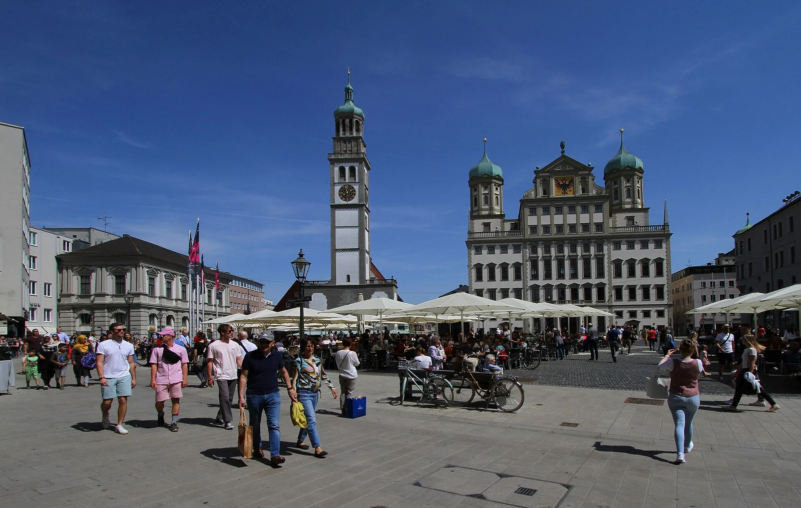
Lechviertel & Maximilianstraße Iluminada
Passeio circular noturno pelo centro histórico iluminado: Rathausplatz com o Augustusbrunnen ➔ Maximilianstraße com as fontes históricas Merkurbrunnen e Herkulesbrunnen ➔ regresso pelos canais medievais do Lechviertel, passando pelo teatro de marionetas Augsburger Puppenkiste. Percurso a pé que termina a 5 min do alojamento.
Acordar no Apartamento, Pequeno-Almoço & Preparativos
💤 Acordar às 10:00 com descanso merecido após a primeira noite e brinde no Lechviertel. Sem pressas nem hora marcada de bilheteira nos castelos.
☕ Pequeno-almoço no apartamento: refeição tranquila no Am Bogen 6 com as provisões compradas na véspera no supermercado (pão, queijo, café, leite e fruta).
🎒 Tarefas essenciais antes de arrancar:
• 📞 Reserva telefónica do jantar: marcar mesa para os 6 às 21:30 em Augsburg (indispensável em pleno sábado de Oktoberfest). Para o almoço não é necessária qualquer reserva.
• 🧺 Preparar comida e piquenique: levar na carrinha os mantimentos (sandes feitas de manhã, sobras de takeaway da véspera ou fruta e provisões do supermercado) e garrafas de água para o almoço junto ao lago.
• 🧥 Agasalhos na carrinha: o Eibsee está a 973 m e ao fim da tarde cai para os 8 °C a 12 °C. Levar corta-vento para a caminhada.
• 🪙 Moedas de 0,50 € e 1 €: necessárias para as casas de banho públicas.
Augsburg ➔ Hohenschwangau (Füssen)
103 km pela estrada federal B17, 1h27 em fluxo livre (OSRM), cruzando aldeias alpinas. O bloco contempla 1h35 de condução como margem de segurança para acomodar o afunilamento da B17 a sul de Schongau e o tráfego turístico de sábado em direção aos castelos.
🅿️ ✅ Estacionamento: €12 a €14 (são €12 até 6 horas nos parques oficiais P1 a P4; se for menos, boa!) em posto automático com cartão ou moedas. O destino ideal para o GPS é o P4 Alpsee, encostado ao lago e à paragem do shuttle.
🚫 Não se sobe de carro até ao castelo: a estrada é estritamente pedonal. Se ao meio-dia de sábado o P4 estiver lotado, os assistentes encaminham para o P1 ou P2 (acrescenta 5 a 8 minutos a pé a subir pela Alpseestraße até ao lago e à paragem do shuttle).
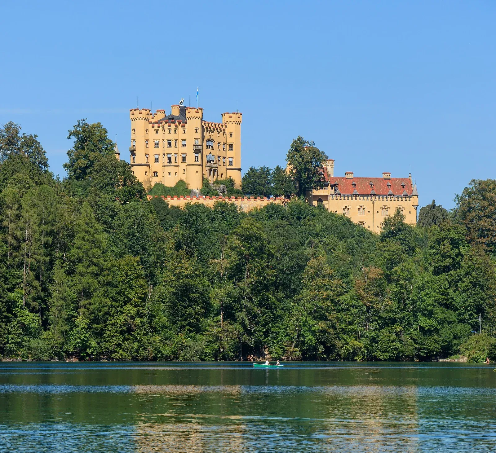
Circuito dos Miradouros: Alpsee, Shuttle e Ponte Marienbrücke
O que se faz no terreno, passo a passo ao longo dos 130 minutos:
🏞️ 1. Do estacionamento ao Lago Alpsee (10 a 15 min): estacionado o carro no P4 (ou P1/P2), o grupo começa nas margens do Alpsee, junto ao Ticket Center. Passeio a pé descontraído junto à margem de água cristalina para esticar as pernas, respirar o ar alpino e apreciar a vista do Castelo de Hohenschwangau na encosta. O acesso ao lago é livre e gratuito.
🚌 2. Subida de shuttle até ao miradouro Jugend: a paragem fica na Alpseestraße, junto ao Schlosshotel Lisl e colada ao P4. Apanha-se o autocarro de ida e volta por €5,00 por pessoa (€30 para os 6; a pé seriam 45 minutos em rampa íngreme). O autocarro sobe pela encosta arborizada e larga na paragem Jugend, com partidas a cada ~20 minutos.
🚶 3. Caminhada até à ponte (5 min): da paragem Jugend, segue-se um trilho suave de 5 minutos até à histórica ponte suspensa sobre a garganta do Pöllat.
🏰 4. Ponte Marienbrücke e vista icónica do Neuschwanstein: suspensa sobre o desfiladeiro, é daqui que se obtém o enquadramento postal mais famoso do mundo do castelo de fadas recortado contra a montanha e a planície bávara. Tempo para contemplação, fotografias panorâmicas e miradouros circundantes. O acesso à ponte é gratuito.
🚍 5. Descida de shuttle e regresso ao lago: descida de autocarro de volta à aldeia / P4, junto ao Alpsee, ficando no sítio exato para o almoço e piquenique à beira do lago às 14:15.
Almoço Descontraído: Piquenique no Alpsee ou Imbiss Local
Refeição flexível e sem amarras de reservas prévias nem menus turísticos de serviço lento:
🧺 Opção recomendada · Piquenique junto às margens do Alpsee: almoçar tranquilamente ao ar livre com a comida trazida de casa no apartamento (sandes preparadas de manhã, sobras de takeaway da véspera ou fruta e provisões compradas no supermercado). Custo nulo, sem esperas de mesa e com vista privilegiada para as águas cristalinas dos Alpes.
🌭 Alternativa quente e rápida · 3 quiosques / tascas recomendados:
• 🌊 Kiosk am Alpsee (junto ao P4): o melhor ponto, colado ao parque P4 onde o shuttle larga o grupo. Serve Bratwurst im Semmel (€4,50 a €5,50) e Leberkässemmel (€4,50 a €5,00). ⭐ O grande plus: tem mesas e bancos de madeira mesmo sobre a margem do lago, permitindo almoçar na mesma mesa com quem faz piquenique da carrinha.
• 🥨 Hotel Müller Takeaway (Alpseestraße 16): balcão rápido virado para a rua pedonal no centro da aldeia, a 2 min a pé da paragem do shuttle. Especialidade em Currywurst mit Pommes (~€9,00) e salsichas grelhadas para levar.
• 🍟 Hotel Alpenstuben Imbiss (Alpseestraße 8): quiosque virado para o passeio junto ao P2 com comida rápida bávara e bebidas frescas sem esperas de mesa.
🕒 Às 15:15 (ou logo que o grupo termine) parte-se na carrinha para a etapa seguinte nos Alpes.
Hohenschwangau ➔ Oberammergau (escolha entre duas rotas na carrinha)
À saída do almoço em Hohenschwangau o grupo decide no carro qual das rotas seguir:
🅰️ Opção A · Rota Base recomendada (B17 ➔ B23 por Steingaden): 46 km, ~45 min em fluxo livre (OSRM, bloco de 50 min com chegada às 16:05). É o traçado padrão do Waze e da Deutsche Alpenstraße, passando por prados verdes e pela garganta do rio Ammer. Garante o máximo de tempo na aldeia (75 minutos de sol pleno), sendo a rota obrigatória se o grupo escolher o Kolbensattel (Opção B da tarde) para dispor de tempo suficiente antes da última subida.
🅱️ Opção B · Alternativa Cénica de Montanha (Áustria, Lago Plansee & Ammersattel): ~58 km, ~1h10 a 1h15. Desce por Reutte (Tirol), percorre a estrada L255 contornando as margens do fiorde alpino do Plansee, sobe o passo do Ammersattel (1.118 m) e desce o vale de Graswang (junto ao Palácio de Linderhof) até Oberammergau. Chegada às ~16:25 a 16:30, ficando com ~50 minutos de visita apenas para um passeio breve pelo centro histórico antes da sombra da montanha às 17:35 (incompatível com o Kolbensattel). (Sem vinheta austríaca: estrada estadual isenta).
Oberammergau: Aldeia dos Frescos (Plano Base) ou Kolbensattel (Alternativa B)
À chegada a Oberammergau, o grupo decide no carro entre duas experiências distintas para os 75 minutos disponíveis:
🅰️ Opção A · Plano Base Cultural (Centro Histórico):
• 🎨 Frescos tradicionais (Lüftlmalerei): fachadas de casas e edifícios históricos com frescos bíblicos e contos populares bávaros, destacando-se a emblemática Pilatushaus.
• 🪵 Tradição secular de entalhe em madeira: oficinas e montras de artesãos e escultores alpinos locais.
• 🅿️ Estacionamento central: carrinha no Parkplatz Eugen-Papst-Straße, colado à zona pedonal (grátis). 75 min de sol pleno na Rota A, ou ~50 min na Rota B cénica.
🅱️ Opção B · Alternativa de Ação & Montanha (Kolbensattel & Alpine Coaster):
• 🚡 Subida panorâmica e adrenalina: para o grupo que prefira ar de montanha e diversão em vez de lojas de artesanato e ruelas. A carrinha segue pela Rota A até à estação do vale (Kremsweg 20, a 1,8 km / 5 min do centro). Subida na telecadeira dupla (Kolbensesselbahn) dos 850 m aos 1.258 m (~15–20 min com vista panorâmica sobre o vale de Ammergau) e descida épica no Alpine Coaster (tobogã em carris com 2,6 km de extensão, 73 curvas, 400 m de desnível e velocidade até 40 km/h com travão manual; descida de ~4–5 min).
• 🎫 ✅ Bilhetes 2026: bilhete combinado adulto (telecadeira + coaster) a €18,50 por pessoa, totalizando €111 para os 6. Estacionamento na base: ~€5 no parquímetro. Bilhetes adquiridos diretamente na bilheteira do vale.
• ⚠️ Restrições e filas de sábado: o coaster encerra com chuva ou pista húmida. Aos sábados de sol a fila dos carrinhos no topo pode demorar 30 a 40 minutos; é indispensável apanhar a telecadeira no vale até às 16:15 e começar a descer no coaster até às 17:15.
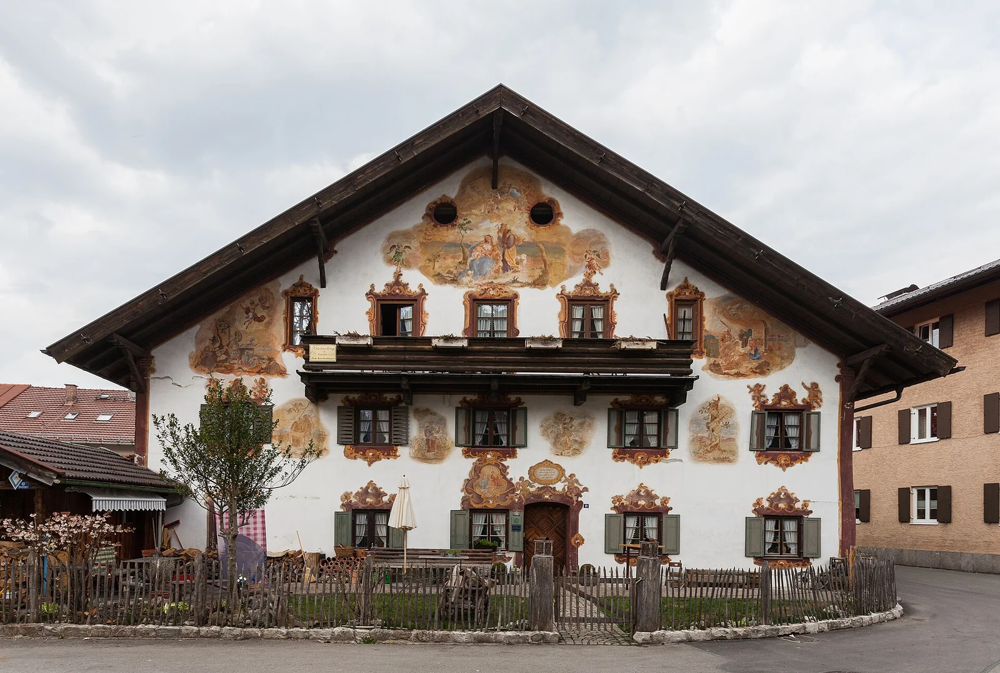
Oberammergau ➔ Lago Eibsee (via Garmisch)
30 km a partir de Oberammergau via Garmisch (36 min em fluxo livre, OSRM). Com saída às 17:20, a chegada ao lago faz-se às 17:56, garantindo 79 minutos no destino antes da partida para o jantar.
⚠️ Previsão de tráfego de sábado: os 36 minutos medem fluxo livre; o percurso atravessa Garmisch-Partenkirchen ao fim de tarde de sábado, apontando para uma chegada entre as 17:56 e as 18:05. Mantém-se uma margem confortável de cerca de 58 minutos até ao pôr do sol (19:03).
Lago Eibsee aos pés da Zugspitze (2.962 m)
Chegada ao lago de águas turquesa aos pés da montanha mais alta da Alemanha em plena hora dourada. O sol põe-se às 19:03 e a partida para a carrinha faz-se às 19:15.
🚶 Trilho panorâmico recomendado: em vez da volta completa ao lago (7,5 km, que demoraria 2 horas), segue-se a pé do estacionamento pelo trilho da margem norte até à ponte do Untersee (~2 km por sentido, cerca de 50 minutos ida e volta), com a panorâmica mais deslumbrante sobre a Zugspitze e o reflexo das montanhas na água.
🅿️ Estacionamento: apontar ao Parkplatz Eibsee-Hotel (Am Eibsee 1, junto à margem, cerca de €10). Saída impreterível às 19:15 para a viagem de regresso a Augsburg a tempo do jantar bávaro das 21:30.
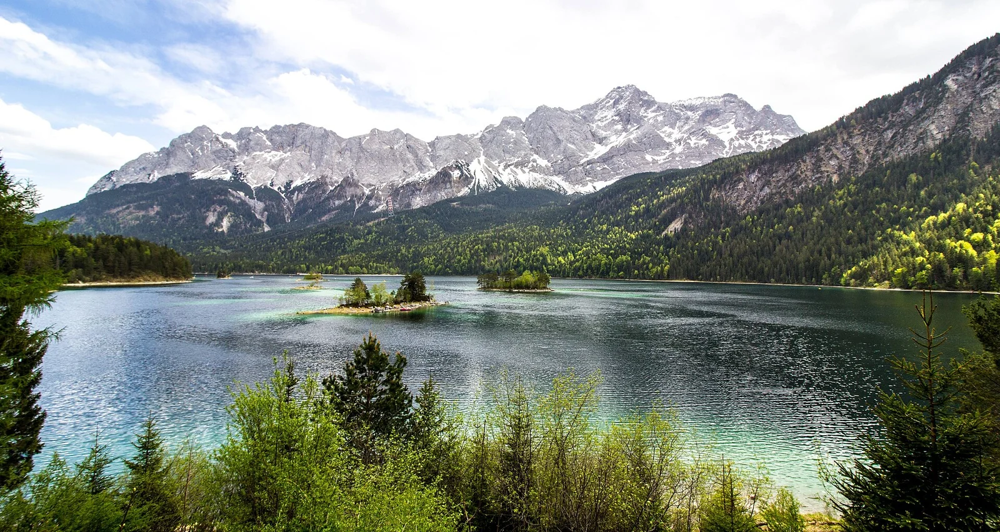
Lago Eibsee ➔ Augsburg (via Garmisch)
~131 km, ~2h00 de condução. O percurso direto tem 131 km (~1h55 em fluxo livre, OSRM). O bloco contempla 2h00 para absorver o tráfego de regresso de sábado ao cruzar Garmisch-Partenkirchen.
🅿️ Chegada a Augsburg às 21:15: janela confortável de 15 minutos para estacionar a viatura no centro histórico ou no parque habitual (Parkhaus Zeughaus) e caminhar descontraídos até ao restaurante para a reserva das 21:30.
Jantar Bávaro em Augsburg & Celebração dos Alpes
Mesa de 6 pessoas reservada de manhã para as 21:30 (marcação indispensável num sábado à noite em plena época de Oktoberfest).
🍻 Brinde de celebração à Rota dos Alpes: refeição sentada e descontraída numa cervejaria tradicional no Lechviertel ou na Rathausplatz (ex.: Altstadtgasthaus Bauerntanz ou Riegele WirtsHaus), com pratos típicos da Suábia e Baviera e cerveja local, celebrando o dia mais fotogénico da viagem antes de recolher ao apartamento.
⚠️ Em caso de qualquer atraso ou retenção na estrada, telefonar do carro para a casa segurar a mesa.
Acordar no Apartamento, Pequeno-Almoço & Preparação da Viagem
💤 Acordar às 09:15 com sono recuperado no apartamento na Am Bogen 6 após a jornada nos Alpes (~9h de repouso). Manhã tranquila sem correrias nem despertador madrugador.
☕ Pequeno-almoço em casa: refeição serena no alojamento com as provisões do frigorífico.
🎒 Tarefas da manhã antes de arrancar às 10:15:
• 📞 Reservar almoço de domingo para os 6 em Rothenburg: ligar para o Hotel-Gasthof Reichsküchenmeister (+49 9861 9500) ou o Restaurant Baumeisterhaus (+49 9861 9470-0) para as 13:15. Ambas têm cozinha contínua.
• 💶 Levar dinheiro vivo: contar com notas no bolso para as bancas de Schneeballen e pequenas compras.
• 🚗 Partida às 10:15 na carrinha de 7 lugares (ou às 10:00 se quiserem paragem fotográfica rápida junto a Harburg ou Dinkelsbühl).
Augsburg ➔ Rothenburg ob der Tauber (pela 🌻 Estrada Romântica)
Condução cénica de 155 km (~2h30 a 2h40) pela mítica Estrada Romântica (B2 ➔ B25), serpenteando por prados verdejantes, castelos medievais e cidades fortificadas sob a luz da manhã. São menos 31 km do que a autoestrada e um percurso visualmente encantador.
• Donauwörth (km 42): vista sobre o rio Danúbio e confluência com o Wörnitz.
• Burg Harburg (km 58): espetacular castelo feudal de muralhas intactas no topo de um rochedo sobranceiro à estrada.
• Nördlingen (km 75): cidade fortificada no centro da cratera de meteorito do Geopark Ries, com a torre Daniel (90 m).
• Dinkelsbühl (km 108): fossos de água defensivos e muralhas góticas intactas com torres de vigia.
⏱️ Chegada às 12:55 a Rothenburg, garantindo 20 minutos de margem perfeita para estacionar no P4 Galgentor (ou P3) e caminhar tranquilamente até à mesa do almoço às 13:15.
Muralhas Históricas, Praça Plönlein & Schneeballen
🅿️ 12:55–13:15 · Estacionar: apontar ao P4 (Galgentor), colado à muralha (se estiver cheio, o P3 na Schweinsdorfer Straße é o maior e fica a 7 min do centro). Parquímetro com tarifa de €1,10/hora e teto de €5,50 no máximo para a tarde toda (grátis a partir das 18:00).
🍽️ 13:15–14:30 · Almoço francónio tradicional: refeição com mesa reservada de manhã num dos dois restaurantes com cozinha contínua: Hotel-Gasthof Reichsküchenmeister (Kirchplatz 8, cozinha 11:30–21:00, encostado a St. Jakob) ou o Restaurant Baumeisterhaus (Obere Schmiedgasse 3, cozinha 11:00–21:00, edifício de 1596 com pátio renascentista).
🌄 14:30–15:15 · Fachada de St. Jakobskirche, Herrngasse e Miradouro do Burggarten: passagem pela imponente igreja gótica para contemplação exterior da fachada e torres góticas (sem entrada no interior, poupando €30), descida pela nobre Herrngasse e passeio nos jardins do antigo castelo imperial sobre o esporão da montanha (grátis), com a panorâmica mais desafogada sobre o vale do rio Tauber e a ponte de arcos duplos. Inclui caminhada de 6 min até ao museu.
🗡️ 15:15–16:15 · Mittelalterliches Kriminalmuseum: museu do direito penal medieval com instrumentos originais, processos históricos e a célebre Dama de Ferro. Aberto até às 18:00 (última entrada 17:15). Bilhetes a €10,50 por pessoa (€63 para os 6). Alternativa se alguém dispensar museu: aldeia de Natal da Käthe Wohlfahrt ou subida à torre do Rathaus (~€3).
📸 16:15–17:15 · Plönlein, Schneeballen e Troço Nascente da Muralha: hora inteira sem pressas para a fotografia no icónico cruzamento do Plönlein, prova dos doces típicos Schneeballen (Bäckerei Striffler ou Café Diller) e percurso pedonal de 25 a 30 minutos pelo passadiço coberto da muralha entre a Rödertor e a Galgentor.
🚗 17:15–17:35 · Regresso ao Carro: chegada ao P4 Galgentor, paragem técnica e partida pontual às 17:35.
Rothenburg ob der Tauber ➔ Augsburg
186 km, ~2h00 de condução pela A7 e A8.
🚚 Autoestrada fluida ao domingo: com a proibição de circulação de camiões pesados ao domingo (Sonntagsfahrverbot), a autoestrada corre sem tráfego de mercadorias. O percurso é direto e desimpedido até Augsburg.
Jantar Tranquilo em Augsburg & Deitar Cedo
Chegada a Augsburg, arrumação no alojamento e saída a pé para um jantar calmo nas imediações do Lechviertel ou da Rathausplatz.
💤 Deitar cedo e descansar as pernas: a segunda-feira seguinte (Dia 6) é o grande dia da viagem, com a jornada na Oktoberfest em Munique que se estenderá até perto da meia-noite.
Sair de casa para a Augsburg Hbf
São 17 minutos a pé desde o Am Bogen 6 até à estação, e não há folga para os esquecer: saindo às 11:00 chega-se ao cais em cima da partida.
🔴 Sai-se às 10:40 e não às 10:50. Nos 20 minutos que sobram ainda é preciso comprar e preencher à mão os dois bilhetes e descer ao cais com seis pessoas. Dez minutos de folga não chegam para isso.
Augsburg Hbf ➔ München Hbf (2x Bayern-Ticket)
Viagem rápida de 38 min. Como cada Bayern-Ticket cobre no máximo 5 passageiros, compramos 2 bilhetes (2 de 3 pax, €54 + €54 = €108 total grupo), com transporte ilimitado o dia inteiro em comboios regionais e em toda a rede MVV de Munique. Carro em segurança no apartamento.
⚠️ O Glockenspiel perde-se, e mais vale saber já. Toca às 11:00, 12:00 e 17:00, e o das 12:00 acaba por volta das 12:12. Não há como chegar antes: da Hauptbahnhof à Marienplatz são 1,6 km, e mesmo de S-Bahn são ~15 min de porta a praça. Chegam às 12:10 e apanham dois minutos, ou seja, nada. Não vale reorganizar o dia por causa disto: são 12 minutos de bonecos a rodar, o espetáculo mais sobrevalorizado de Munique, e o das 17:00 apanha-vos dentro da tenda, que é onde é para estar.
Marienplatz, Neues Rathaus & Catedral Frauenkirche
11:55-12:10 · da Hauptbahnhof à praça, de S-Bahn. ⚠️ A pé está fora de questão: são 1,7 km e 23 minutos (OSRM). De S-Bahn são duas paragens e 3 min de viagem, mas de porta a praça, com seis pessoas, são ~15: atravessar o átrio, descer à Stammstrecke, esperar, viajar e subir da plataforma funda da Marienplatz. Incluído no Bayern-Ticket.
Marienplatz com a sua câmara neo-gótica, e depois 445 m e 6 minutos a pé até às icónicas torres com cúpulas da Frauenkirche, grátis, segunda 08:00–20:00.
⏱️ O bloco são 25 minutos para absorver a S-Bahn sem tocar nas 13:45. Dá para a fachada, a caminhada e uma volta pela nave. Não dá para lojas nem fotografias individuais.
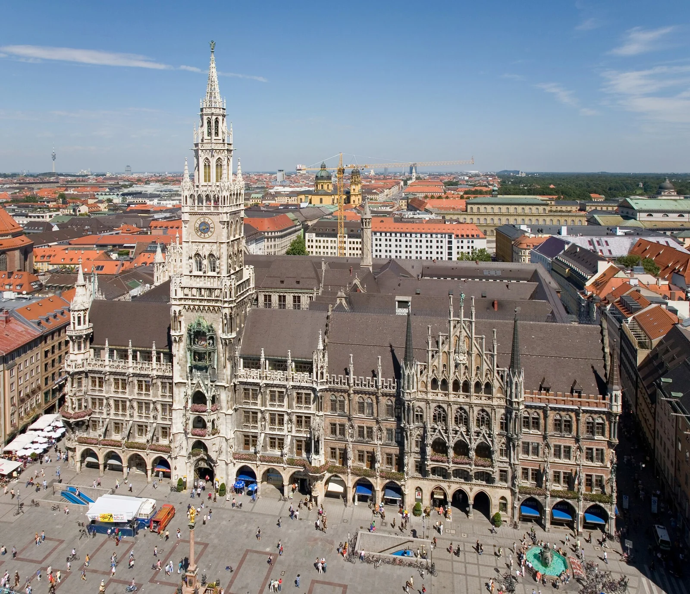
Viktualienmarkt
12:35-12:45 · a pé até ao Viktualienmarkt. 608 m e 8 minutos a pé desde a Frauenkirche. Não há tempo para vaguear: estes 10 minutos são quase todos a andar. 12:45-13:00 · de passagem e de pé. Uma Weißwurst com mostarda doce, um pretzel gigante, queijo Obatzda, e segue-se. ✅ Ao domingo o mercado fecha. Numa segunda está aberto, sorte do calendário.
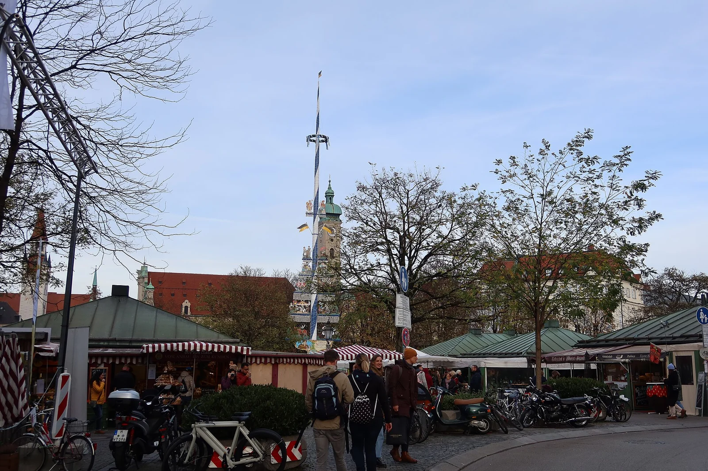
Asamkirche
653 m e 9 minutos a pé desde o Viktualienmarkt até à Asamkirche (Sendlinger Str. 32). Grátis, e doze minutos lá dentro chegam. Construída pelos irmãos Asam entre 1733 e 1746 num terreno com oito metros de largura, para uso próprio: é a coisa mais densamente barroca da Alemanha, com iluminação indireta e colunas torcidas.
Karlsplatz (Stachus) & metro até à Theresienwiese
885 m e 12 minutos a pé desde a Asamkirche até ao Karlsplatz (Stachus), e daí U4 ou U5, duas paragens (com a Hauptbahnhof pelo meio, ~3 min de viagem) até Theresienwiese. Incluído no Bayern-Ticket. Os 11 minutos do bloco são para descer ao cais, esperar e sair no meio do fluxo de gente. (A caminhada da Asamkirche ao Karlsplatz são 12 minutos: é o troço a vigiar da manhã.)
A manhã inteira são 2,6 km e 35 minutos de caminhada, num único varrimento para sudoeste da Marienplatz até ao Stachus. (Medido no OSRM, perfil a pé.)
OKTOBERFEST 2026 na Theresienwiese!
O ponto alto da viagem, e sem mesa reservada: anda-se de tenda em tenda. Cerveja de litro Maß (€14,80 a €15,90), frango assado Hendl (€16-19), cantoria bávara e festa rija.
São 8h35 na Wiesn, e não são 8h35 de cerveja: metade disto é o recinto, os carrosséis, as bancas e a Oide Wiesn.
⏰ A última cerveja e a última música são às 22:30 e as tendas fecham às 23:30, mas vocês saem às 22:20, por causa do comboio. Ver o nó seguinte.
Não se entra no recinto com mochilas. O limite é de 3 litros, ou seja 20 × 15 × 10 cm, e é revistado à entrada. Há bengaleiros pagos nos acessos, mas a fila para levantar às 22:20 passa dos 30 minutos, e isso é exatamente o comboio das 22:58 perdido. Toda a gente sai de Augsburg de manhã só com o que cabe nos bolsos ou numa bolsa de cintura. Quem trouxer mochila para o dia de Munique fica preso a ela.
💶 Dentro das tendas paga-se em dinheiro. Os empregados cobram cada rodada na hora e a esmagadora maioria não aceita cartão. As caixas do recinto cobram comissões altas e têm fila. Levantar €100 a €150 por pessoa ainda em Augsburg, antes do comboio da manhã.
A alternativa é sentar-se logo e nunca mais sair: entrar às 13:45 na Augustiner-Festhalle, procurar lugar na zona não reservável ou no Biergarten, almoçar ali o Hendl e ficar. Custa a variedade e ganha a certeza.
✅ O que fica decidido: o plano é o de andar, mas a regra de desempate é a mesa. Se na primeira tenda encontrarem seis lugares juntos numa zona não reservável, ficam lá e acabou. Não se abandona uma mesa boa às 14:30 para ir procurar outra. Andar entre tendas é o que se faz quando não se arranja lugar, não um programa a cumprir.
Chegar às 16:00 em ponto já é tarde: as zonas não reserváveis começam a encher às 15:00 com outros grupos a fazer exatamente isto, e seis lugares juntos são dos primeiros a desaparecer. Estejam sentados às 15:30. Uma vez na zona não reservável não há limite de permanência, e o lugar é vosso até às 22:20.
🚨 Depois de fixados, ninguém sai da tenda. Se ela entrar em Einlassstopp enquanto alguém foi lá fora apanhar ar, essa pessoa não volta a entrar, por mais que os outros cinco lhe guardem o lugar. Casas de banho, só as de dentro.
⏰ Combinar isto entre os seis antes de chegar. Às 15:30, já com duas Maß dentro, não se decide nada.
✅ A entrada nas tendas é sempre gratuita, a qualquer hora. O que se reserva é o lugar, não a entrada.
✅ 25% dos lugares interiores nunca podem ser reservados nas tendas grandes (exceto Käfer Wiesn-Schänke, Weinzelt e as tendas pequenas).
✅ Nos Biergärten não há reservas de todo. É a vossa melhor carta.
🍺 Sem lugar não há cerveja, e o caneco não sai da tenda (é furto, dá queixa e proibição de entrada). Acabar a Maß antes de mudar de sítio.
⚠️ Para seis pessoas, cada tenda são 45 a 60 minutos: entrar, arranjar seis lugares juntos, ser servido, beber um litro, pagar e sair. Em 105 minutos de tarde cabem duas tendas, não quatro, e com a da noite dão três no dia. Quem tentar quatro bebe quatro litros em duas horas e não chega à noite de pé.
🚫 Não se ocupa mesa com placa de reserva, mesmo vazia.
🌧️ Com chuva as tendas enchem, com sol enchem os Biergärten.
13:45 às 15:30, duas tendas escolhidas destas: Augustiner-Festhalle (o Biergarten de 2.500 lugares, que nunca tem reservas, e a melhor cerveja do recinto), Schottenhamel (a dos jovens de Munique) ou Fischer-Vroni (peixe no espeto, pequena e calma). Se sobrar tempo, gasta-se no recinto ou na Oide Wiesn (€4 a partir dos 15 anos, grátis para todos depois das 21:00, três tendas tradicionais e um terço dos lugares nunca reservável; pedir o carimbo de reentrada ao sair). Não se enfia uma terceira tenda.
A partir das 15:30, ficar: Hofbräu-Festzelt. A Stehkurve, ~1.000 lugares de pé à frente do palco, não é reservável de todo, e é por isso a única zona da Wiesn que não vos pode fechar a porta.
⚠️ Mas procurem mesa primeiro. A Stehkurve das 15:30 às 22:20 são quase sete horas de pé, depois de uma manhã a andar 2,6 km. É a garantia, não a primeira escolha.
🚫 A Hacker-Festzelt não entra na lista, por mais bonita que seja por dentro: costuma ser das primeiras a fechar as portas.
RE9 n.º 57088: München Hbf 22:58 ➔ Augsburg Hbf 23:46
22:20, sair da mesa. Não às 22:30, não "por volta de". A última cerveja e a última música são às 22:30 e as tendas só fecham às 23:30, mas vocês não podem estar lá para isso. Os dez minutos entre as 22:20 e as 22:30 são exatamente os que faltam no fim da cadeia.
O Bayern-Ticket é válido até às 03:00 e cobre este comboio.
O horário oficial em PDF do operador (Arverio Bayern / agilis, linha RE9, válido desde 14 dez 2025), página de segunda a sexta, dá as últimas partidas de München Hbf como 20:57 · 21:59 · 22:58 · 00:06, e o das 00:06 tem a restrição
n0 = nur Nächte Freitag/Samstag.Na noite de segunda 28 para terça 29, o último comboio é o das 22:58. Depois disso não há nada até de madrugada.
🚶 A pé até München Hbf: 1,4 km, ~18 min, saindo pelo lado norte (Esperantoplatz) e seguindo pela Pettenkoferstraße. É plano, iluminado e não depende de ninguém.
🚇 S-Bahn de Hackerbrücke, 1 paragem, mais rápido se entrarem. Durante a Wiesn a Bundespolizei faz controlo de fluxo e fecha as cancelas periodicamente para não sobrelotar o cais: pode custar 15 a 25 minutos só para chegar à plataforma.
1. Táxi ou van, é este o plano B a sério. ~65 km pela A8, 45–50 min, €150 a €180, que dividido por 6 dá €25 a €30 por pessoa. ⚠️ Combinar o contacto de um táxi ou carrinha de 6+ lugares em Munique ANTES de sair da tenda, não se arranja uma carrinha de sete lugares à meia-noite numa noite de Oktoberfest sem pré-aviso.
2. Talvez um ICE/IC (~€20–25/pax), mas não se conseguiu confirmar que exista algum depois das 22:58 numa segunda-feira. Verificar no DB Navigator nessa manhã, e não sair da tenda a contar com isso.
Check-Out em Augsburg ➔ Munique (Nymphenburg)
Check-out do apartamento em Augsburg às 11:00 com as malas já no carro. ⚠️ Confirmar a hora: na Alemanha o normal é 10:00 e não 11:00, e se o Lexapartments não autorizar saída tardia o dia todo recua uma hora.
Condução de 60 km, 45 min em fluxo livre (medido no OSRM) pela A8 até ao grandioso Palácio Nymphenburg, mais a entrada no parque de estacionamento e a caminhada até ao corpo central.
💤 Acordar às 10:00, depois da noite de Oktoberfest, vai fazer falta.
Palácio e Jardins de Nymphenburg
Grandiosa residência barroca de verão da realeza bávara (zona Oeste). 70 minutos de visita para caminhar ao longo do canal central com cisnes, apreciar a imponente fachada e descontrair nos jardins históricos.
Nymphenburg ➔ BMW Welt & Olympiapark
Voltar ao carro, sair do parque de Nymphenburg, 6,0 km pelo Mittlerer Ring (9 min em fluxo livre, 15 a 20 com semáforos), entrar na garagem subterrânea da BMW Welt e subir. São 30 minutos de transição total.
💳 🔴 Aqui não se paga em dinheiro: a BMW Welt não aceita numerário (estacionamento a €3,50/hora, entradas e restauração): apenas cartão. (Os primeiros 15 minutos de estacionamento são grátis.)
BMW Welt & Parque Olímpico (Olympiapark 1972)
Pavilhão futurista com superdesportivos BMW M, Rolls-Royce, MINI e motos de alta tecnologia, e a icónica cobertura em tenda do Parque Olímpico de 1972 logo ao lado. Almoça-se aqui, nos restaurantes do próprio edifício ou no Olympiapark.
✅ Entrada gratuita: o pavilhão e o parque têm acesso livre (exposição aberta das 09:00 às 18:00).
🏛️ Museu BMW (opcional, ao lado): ter–dom 10:00–18:00 (última entrada 17:30). Bilhete avulso €17 ou €16 por pessoa para grupos de 5 ou mais.
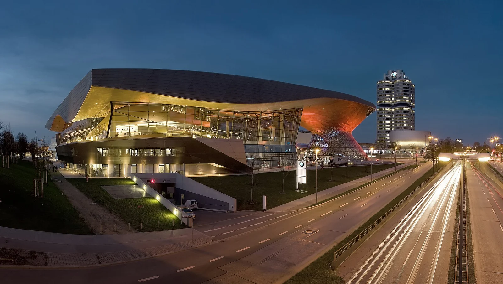
BMW Welt ➔ Allianz Arena (Fröttmaning)
Pagar o parque na máquina, ~11 km até Fröttmaning (16 min em fluxo livre), entrar no parque do estádio e percorrer a Esplanade, que tem 543 m de rampa, até ao edifício. São 40 minutos de transição total.
🅿️ Estacionamento do estádio: €5,00 em dia sem jogo.
Allianz Arena (Visita Exterior & FC Bayern Megastore)
Acesso livre e gratuito à gigantesca esplanada exterior para admirar as famosas almofadas de ETFE do estádio e tirar fotos de grupo. Visita à FC Bayern Store oficial.
✅ Confirmado para a data exata, não para «uma terça qualquer». A allianz-arena.com publica horários dia a dia e para 29/09/2026 dá estádio, museu, tours e loja todos das 10:00 às 18:00, com o Paulaner Fantreff North aberto e a restante restauração fechada. O bloco das 15:20 cabe todo dentro disso.
🎟️ Se decidirem entrar: o FC Bayern Museum sozinho custa €12 e dura ~1h30, com áudio-guia em 11 idiomas. Os ~€25 são o Museum + Arena Tour, que dura 2h30 e não cabe de todo; pelo meio há o Museum + Arena View a €19. Nada disto cabe nos 40 minutos do plano, mas se o grupo decidir no local, é o de €12 que se compra.
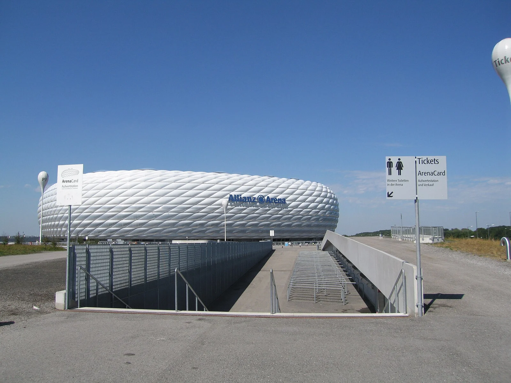
Allianz Arena ➔ Aeroporto MUC & Devolução Enterprise
16:00-16:15 regresso ao carro pela Esplanade e pagamento do parque. 16:15-17:00 pela A9 e A92 até ao aeroporto: 30 km, 23 min em fluxo livre (medido no OSRM), mais o abastecimento e a entrada no Mietwagenzentrum. 17:00-17:20 devolução da carrinha e caminhada até ao Terminal 2.
⛽ Atestar antes de chegar ao aeroporto, num posto em Eching ou Neufahrn. O posto da Zentralallee é onde toda a gente que devolve carro vai atestar, e é fila garantida à hora de ponta das devoluções.
🚶 Não há shuttle nem é preciso: o Mietwagenzentrum liga ao Terminal 2 a pé pelo Munich Airport Center, são 350 a 500 m e 6 a 10 minutos com carrinhos de bagagem.
🔍 Antes de entregar a chave, revistar o carro todo. Bolsas das portas, debaixo dos bancos, o porta-luvas. Com seis pessoas a descarregar à pressa é assim que ficam carregadores, casacos e carteiras para trás.
✅ A margem é confortável e é de propósito: o check-in e a entrega de bagagem de porão fecham às 19:15. Chegando ao Terminal 2 às 17:20 há 1h55, o que aguenta uma fila de 30 minutos ao balcão sem drama nenhum.
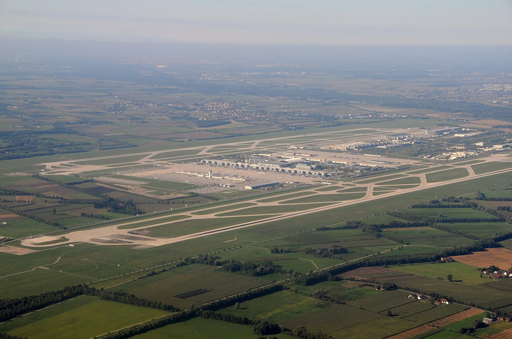
Bilhetes a Comprar & Tratar
Resumo essencial de preços, quantidades e momento de compra de todos os bilhetes da viagem.
Voos TAP Air Portugal
Westbahn · Wien Westbahnhof ➔ Salzburg Hbf
DB ICE 116 · Salzburg Hbf ➔ Augsburg Hbf
2x Bayern-Ticket (Deutsche Bahn)
Transfer Aeroporto VIE (Railjet + U1)
Tesouro Imperial & Prunksaal (Hofburg)
3× Bilhete Simples Wiener Linien
Guia da Oktoberfest 2026
As melhores tendas, regras de ouro e como tirar o máximo partido na Theresienwiese.
Hofbräu Festzelt
A Stehkurve: ~1.000 lugares de pé à frente do palco, e a oktoberfest.de diz que é a única tenda da Wiesn com uma área destas. Não é reservável, e por isso é a única zona que não vos pode fechar a porta. Mais 6.018 lugares sentados e um Biergarten de 3.022. Cerveja a 6,3%, a mais forte do recinto.
Augustiner Festhalle
A favorita dos locais de Munique, e a única que ainda tira a cerveja dos Hirsche, barris de madeira de 200 litros que lhe dão menos gás. É também a mais barata do recinto, €14,80. 6.000 lugares dentro e 2.500 no Biergarten, que nunca tem reservas. Em dia de semana o almoço ainda é sossegado, com famílias: aquece ao longo da tarde, por isso é a primeira paragem.
Hacker-Pschorr (Himmel der Bayern)
Teto pintado como o "Céu da Baviera", com nuvens e estrelas, e a melhor banda do recinto. Costuma ser das primeiras tendas a fechar as portas por lotação, por isso não se constrói o dia à volta dela: se estiver aberta quando lá passarem, entra-se.
Anda-se entre tendas antes das 15:30, e não até às 16:00: as zonas não reserváveis começam a encher às 15:00 com outros grupos a fazer o mesmo, e seis lugares juntos são dos primeiros a desaparecer. Depois fica-se sentado na zona não reservável da tenda escolhida, onde não há limite de permanência e o lugar é vosso até às 22:20. E a partir daí ninguém sai da tenda, ou arrisca-se a não voltar a entrar.
Em dias de semana o recinto e as tendas grandes abrem às 10:00 e fecham às 23:30; última cerveja e última música às 22:30. As tendas pequenas servem até às 23:00, e a Käfer Wiesn-Schänke e o Weinzelt vão até à 1:00.
Maß (1 litro) €14,80 a €15,90 · mais barata a Augustiner €14,80, mais caro o Weinzelt €18,40 (só cerveja de trigo) · ½ Hendl ⚠️ €16-19 · Entrada no recinto e nas tendas: gratuita. Sem reserva, contar ⚠️ €60 a €80 por pessoa no dia.
⚠️ Não beber cerveja não poupa nada: a água engarrafada está a €11,13/litro, a Spezi a €12,84 e a limonada a €12,35, contra €14,80 a cerveja.
A mecânica: 25% dos lugares interiores das tendas grandes nunca podem ser reservados de segunda a sexta (40% até às 15:00 ao fim de semana, depois 25%), na Oide Wiesn é sempre um terço, e nos Biergärten não há reservas de todo.
✅ Há Oide Wiesn em 2026, de 19 de setembro a 4 de outubro, na parte sul da Theresienwiese. O ZLF não ocupa o terreno este ano: o próximo Oktoberfest sem Oide Wiesn é o de 2028.
✅ Entrada €4 a partir dos 15 anos, grátis até aos 14 e para quem tenha incapacidade igual ou superior a 50%. Grátis para toda a gente a partir das 21:00.
🔴 Não há pulseira. Em 2026 a organização substituiu as pulseiras por códigos QR na entrada, para acabar com a fila de as colocar, e a reentrada passou a fazer-se por carimbo na mão. Quem sair sem pedir o carimbo paga os €4 outra vez.
✅ E há uma boa notícia que vem daí: como já não é preciso separar quem entra de quem reentra, a entrada mais próxima da Wiesn principal, que antes era só para reentrada, passa a servir também para a primeira entrada. É a que vos fica no caminho.
✅ Caiu o consumo mínimo nos camarotes da Oide Wiesn para 2026: acabou o voucher extra de ~€18. Cada volta nas atrações históricas custa €1,50.
🚫 O que continua a valer: carimbo nenhum abre uma cancela fechada por lotação (Einlassstopp). Entra-se na Oide Wiesn para ficar, não para espreitar.
Meteorologia & Checklist da Mala
Verifica a previsão térmica e marca os itens que já tens prontos na mala.
Previsão por Dia da Viagem
Tempo, temperaturas, chuva e vento, dia a dia. Gerado pelo scripts/meteo.py, a mesma fonte que escreve o meteo.md. Não editar à mão.
Como ler isto. Cada linha é um dia. Os milímetros são quanto chove no total e as horas são quanto tempo dura: 30 mm em 2 horas é um dilúvio, 30 mm em 20 horas é chuva miudinha. A barra compara dias e satura aos 25 mm; a cor da esquerda segue a mesma escala. «previsão» é o modelo real, com detalhe até cerca de 10 dias de distância; «média 10 anos» é a média dos últimos 10 anos para a mesma data, que não é uma previsão. A tabela hora a hora e a tendência sazonal estão no meteo.md, gerado pelo mesmo comando que gera isto.
O que Levar na Mala
0% ProntoAlojamentos, Carro & Emergências
Moradas, contactos diretos e referências essenciais de reserva num só local.